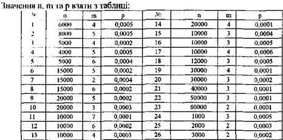

ЗАВДАННЯ ДЛЯ САМОСТІЙНОЇ РОБОТИ № 5
Фірма відправила на базу п штук системних блоків. Імовірність того, що під час транспортування системні блоки зіпсуються дорівнює р. Знайти імовірність того, що на базу поступить рівно:
а) т зіпсованих системних блоків;
б) більше ніж т зіпсованих системних блоків;
в) хоча б один зіпсований системний блок.
